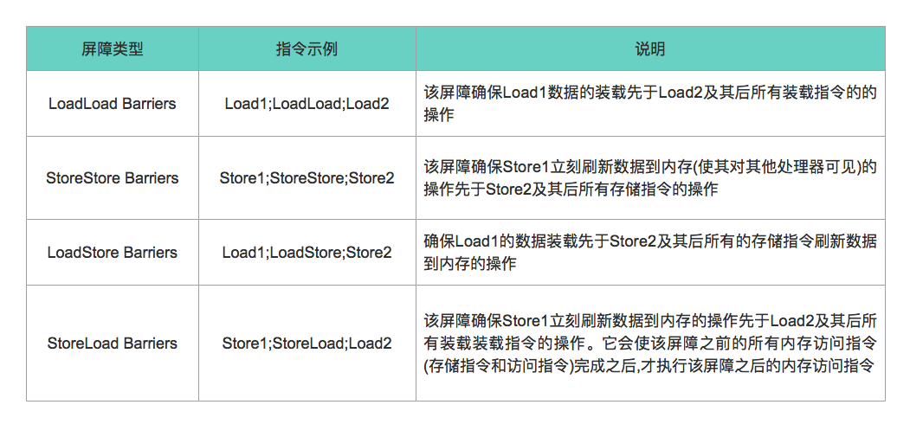

详解volatile的实现原理
volatile是Java提供的一个轻量级同步工具，可以看做轻量级的synchronized。volatile变量修饰符如果使用恰当的话，它比synchronized的使用和执行成本会更低，因为它不会引起线程上下文的切换和调度。但是volatile并不是一个特别安全的同步工具，使用的场景有限，大家使用时必须特别小心。
volatile关键字的作用
volatile关键字的作用简单来说有两条
- 保证可见性，具体是指读取volatile变量时总是会读取到最后写入的值。
- 禁止重排序，这一点下面会详细说明。
另外需要注意的是volatile不能保证原子性，或者说volatile只能保证单操作的原子性，不能保证复合操作的原子性。比如如下代码，a++并不具备原子性，所以并不是线程安全的。
volatile int a = 0;
public void add() {
a++;
}
使用场景
上文说了volatile使用的场景有限，只有在同时满足以下条件时才是安全的
- volatile变量的结果不依赖当前值，或者能够保证只有一个线程改变volatile变量的值
- volatile变量不需要和其他变量共同参与不变性约束
下面介绍几种经典的使用场景
状态标志
这个应该算是volatile最经典的使用场景了，一个线程更改了状态标志需要另一个线程能够立刻察觉，这需要我们在线程间同步状态变量防止出现意想不到的结果，使用synchronized可以解决这个问题，但是显得比较笨重，使用volatile可以起到很好的效果。
volatile boolean shutdown = false;
public void shutdown() {
shutdown = true;
}
public void doWork() {
while(!shutdown) {
// doWork
}
}
双检锁
双检锁这个场景其实是利用volatile来安全发布对象，如果不使用volatile，多线程下双检锁依然是不安全的，这是因为指令重排序的缘故，可能导致某个线程看到未初始化完全的对象，具体原因这里就不详细讲解了，不懂的同学可以自行查找资料学习一下。
public class SingletonExample {
private SingletonExample() {
}
private volatile static SingletonExample instance = null;
public static SingletonExample getInstance() {
if (instance == null) {
synchronized (SingletonExample.class) {
if (instance == null) {
instance = new SingletonExample();
}
}
}
return instance;
}
}
开销较低的读－写锁策略
我们知道volatile并不能保证原子性，但是对于一个读多写少的程序来讲，使用volatile和synchronized结合可以大大提高效率。
public class Counter {
private volatile int value;
public int getValue() {
return value;
}
public synchronized int increment() {
return value++;
}
}
volatile建立的happens-before关系
首先我们来回顾一下happens-before规则中的其中三条：
- 程序次序规则：一个线程内，按照代码顺序，书写在前面的操作先行发生于书写在后面的操作；
- volatile变量规则：对一个变量的写操作先行发生于后面对这个变量的读操作；
- 传递规则：如果操作A先行发生于操作B，而操作B又先行发生于操作C，则可以得出操作A先行发生于操作C；
比如在如下代码中，假设线程A执行writer()方法之后，线程B执行reader()方法。根据happens-before规则，这个过程建立的happens-before关系可以分为3类：
- 根据程序次序规则，1 happens-before 2，3 happens-before 4
- 根据volatile变量规则，2 happens-before 3
- 根据传递规则， 1 happens-before 4
public class VolatileExample {
private int a = 0;
private volatile boolean flag = false;
public void writer() {
a = 1; // 1
flag = true; // 2
}
public void reader() {
if (flag) { // 3
System.out.println(a); // 4
}
}
}
线程A写一个volatile变量后，B线程读同一个volatile变量。A线程在写volatile变量之前所有可见的共享变量，在B线程读同一个volatile变量后，将立即变得对B线程可见。
volatile的内存语义
写内存语义
volatile写 和 释放锁 具有相同的内存语义，当写一个volatile变量时，JMM会把该线程对应的本地内存中的 共享变量值 立即刷新到主内存中。
在VolatileExample的代码示例中，线程A写入flag变量后，flag的值和a的值都会被刷新到主内存，此时，本地内存A和主内存中的共享变量的值是一致的。
读内存语义
volatile读 和 获取锁 具有相同的内存语义，当读一个volatile变量时，JMM会把该线程对应的本地内存设置为无效，直接从主内存中读取 共享变量。
在VolatileExample的代码示例中，线程B读取flag变量时，由于本地内存B中的值已经无效，所以线程B必须从主内存中读取flag和a的值，此时，本地内存B和主内存中的共享变量的值是一致的。
如果我们把volatile写和volatile读这两个步骤综合起来看的话，在线程B读一个volatile变量后，线程A在写这个volatile变量之前所有可见的共享变量的值都将立即变得对读线程B可见。
为什么volatile要禁止重排序
从上面的分析中我们可以看出， volatile的内存语义 和 volatile建立的happens-before关系 其实是同一件事的两个角度的描述。volatile变量需要禁止重排序，这是因为重排序会破坏volatile建立的happens-before关系，或者说破坏volatile的内存语义。
我们依旧拿VolatileExample的例子来讲，如果允许重排序的话，操作2在操作1前执行,那么最终执行的顺序可能是 2–>3–>4–>1，这样的话操作1的执行结果就对操作4不可见，这违反了根据happens-before规则推导出来的结果1 happens-before 4。
所以，如果volatile变量与其他变量重排序会破坏volatile内存语义的话，这种重排序就会被JMM禁止。为此，JMM制定了volatile重排序规则表。
从表中我们可以看出：
- 如果第一个操作为volatile读，则不管第二个操作是什么，都不能重排序。这个操作确保volatile读之后的操作不会被编译器重排序到volatile读之前；
- 当第二个操作为volatile写是，则不管第一个操作是什么，都不能重排序。这个操作确保volatile写之前的操作不会被编译器重排序到volatile写之后；
- 当第一个操作volatile写，第二操作为volatile读时，不能重排序。
实现原理
为了实现volatile的内存语义，编译器在生成字节码时，会在指令序列中插入内存屏障来禁止特定类型的处理器重排序。
内存屏障
内存屏障(Memory Barriers)是一组处理器指令，用于实现对内存操作的顺序限制。内存屏障提供了两个功能。首先，它们通过确保从另一个CPU来看屏障的两边的所有指令都是正确的程序顺序，而保持程序顺序的外部可见性；其次它们可以实现内存数据可见性，确保内存数据会同步到CPU缓存子系统。
Store Barrier
Store屏障，强制所有在store屏障指令之前的store指令，都在该store屏障指令执行之前被执行，并把store缓冲区的数据都刷到CPU缓存，这会使得程序状态对其它CPU可见。
Load Barrier
Load屏障，强制所有在load屏障指令之后的load指令，都在该load屏障指令执行之后被执行，并且一直等到load缓冲区被该CPU读完才能执行之后的load指令。这使得从其它CPU暴露出来的程序状态对该CPU可见，这之后CPU可以进行后续处理。
Full Barrier
Full屏障，复合了load和save屏障的功能。
Java内存屏障
大多数时候内存屏障都是复杂的话题，在不同的CPU架构上内存屏障的实现非常不一样。为了屏蔽底层实现的不同，JMM把内存屏障分为4种：

StoreLoad Barriers是一个全能型的屏障，它同时具备其他3个屏障的效果，现代多核处理器大多支持该屏障（其他类型的屏障不一定被所有处理器支持）。执行该屏障开销会很昂贵，因为当前处理器通常要把写缓存区的数据全部刷新到主内存中。
volatile的内存屏障
对于编译器来说，发现一个最优布置来最小化插入屏障的总数几乎不可能，为此，JMM采取保守策略。下面是基于保守策略的JMM内存屏障插入策略：
- 在每个volatile写操作的前面插入一个StoreStore屏障
- 在每个volatile写操作的后面插入一个StoreLoad屏障
- 在每个volatile读操作的后面插入一个LoadLoad屏障
- 在每个volatile读操作的后面插入一个LoadStore屏障
volatile的内存屏障插入策略非常保守，其实在实际中，只要不改变volatile写-读得内存语义，编译器可以根据具体情况优化，省略不必要的屏障。
参考文档
- 《Java并发编程的艺术》
本作品采用知识共享署名 4.0 国际许可协议进行许可，转载请注明原文链接
本文链接：https://schhx.github.io/2018/07/04/详解volatile的实现原理/